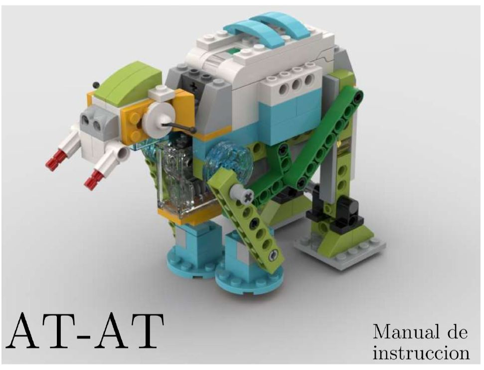
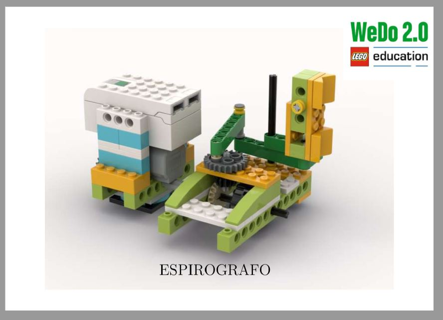
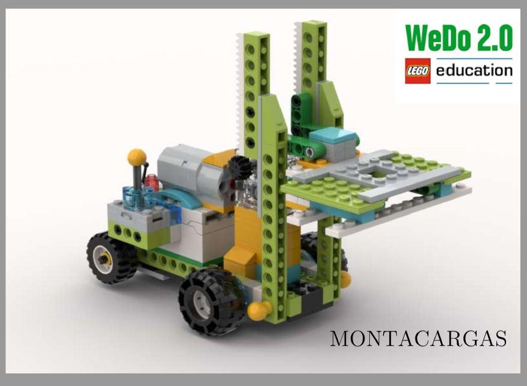
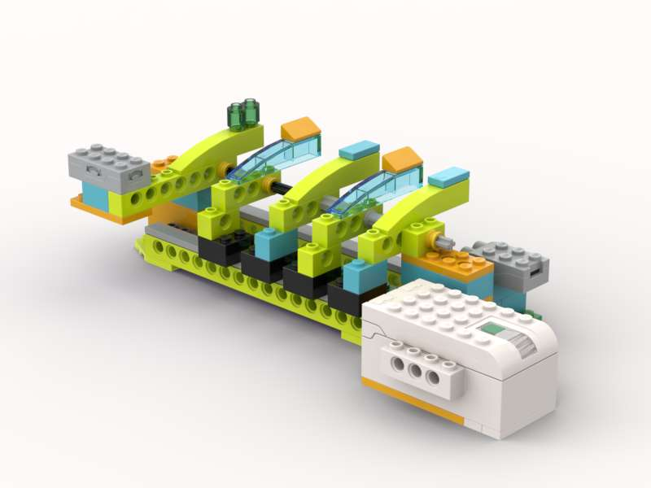
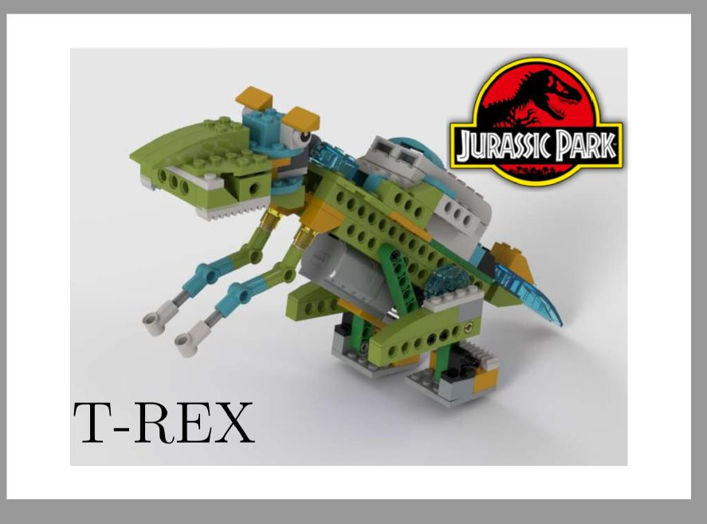
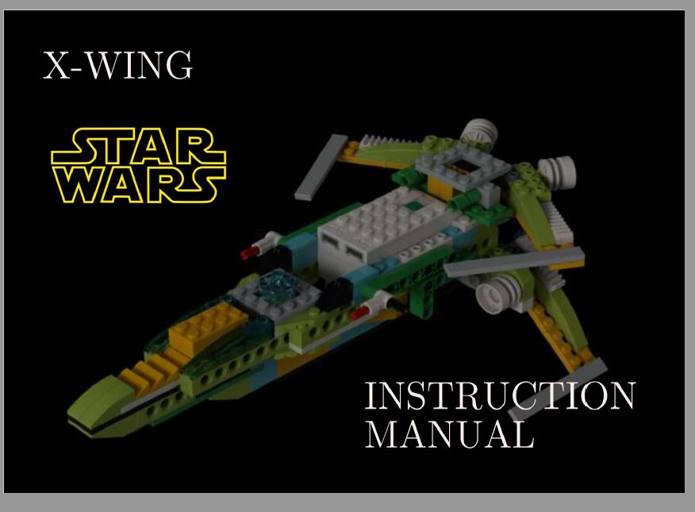
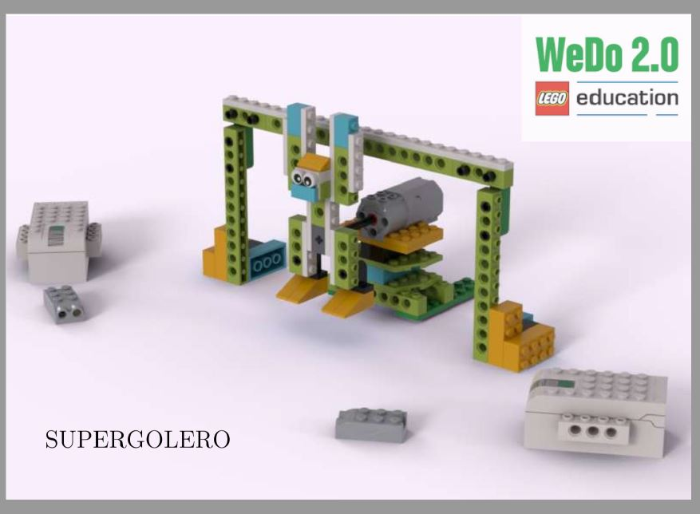
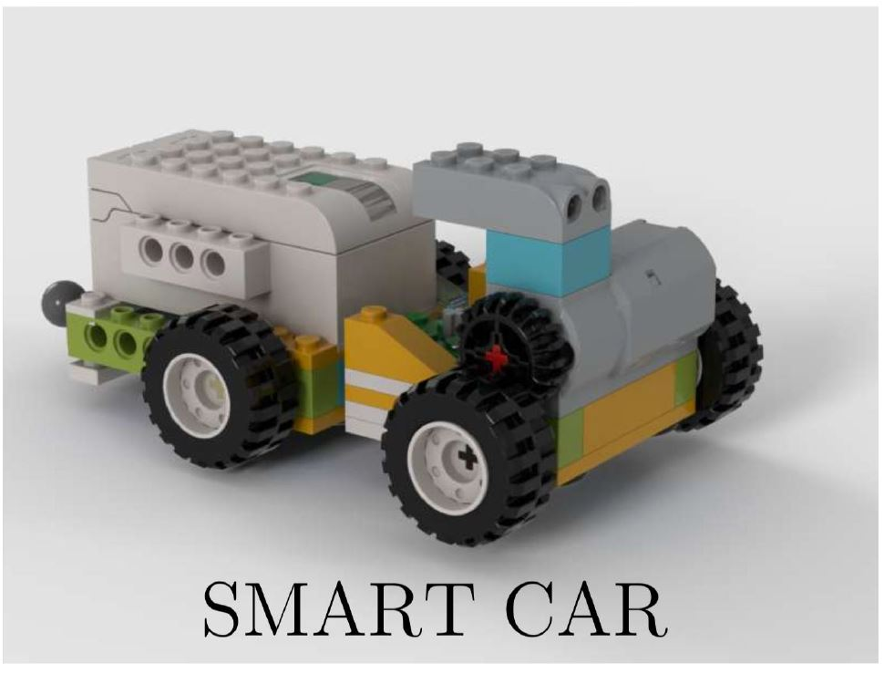
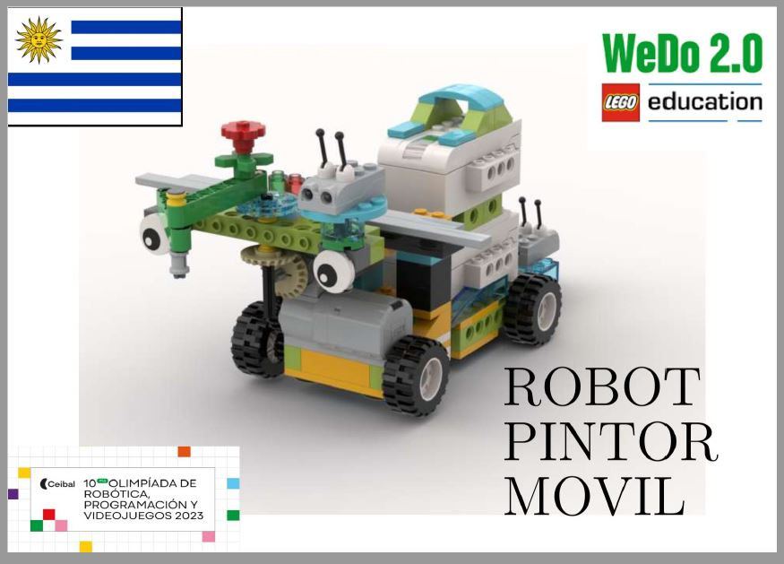

👨🎓 Estudios
BIOS
Técnico en Reparación de PC y Mantenimiento en Redes
Finalizado
Universidad de la República (Udelar)
Facultad de Ingeniería – Ingeniería en Computación
Aplazado
Facultad de Ciencias – Licenciatura en Física-Médica
Finalizado. No completado
Universidad ORT Uruguay
Analista en Tecnologías de la Información
En curso
Proyectos Tecnológicos realizados en el taller de Robótica
ATAT Star Wars
ATAT Star Wars
Espirografo
Robót pintor que realiza Epitrocoides
Giro Maker

Robót pintor que realiza patrones circulares de dibujo.
Montacargas
Un robót capas de cargar objetos.
Piano
Piano capaz de generar diferentes notas musicales. Se requiere Scratch 3.0 para escuchar las notas.
Guitarra Electrica

Guitarra capaz de generar diferentes sonídos. Se requiere Scratch 3.0 para escuchar las notas.
T-Rex
Clasico tiranosaurio del parque jurasico.
X-Wing Star Wars
X-Wing de Star Wars.
Avion acrobata

Avion que realiza piruetas.
Supergolero
Golero capas de atajar pelotas.
Auto inteligente
Auto inteligente capas de evitar obstaculos.
Proyectos Tecnológicos olimpiadas de robótica Ceibal
Robót pintor (2023)
Proyecto desarrollado para las Olimpiadas de Robótica 2023 de Ceibal con alumnos de 2.º de primaria. El robot puede ser controlado mediante un control, tablet o computadora, utilizando Scratch 3.0 y Lego Education Wedo 2.0. Además de moverse, puede pintar, lo que permite incentivar la creatividad en estudiantes que aún no tienen habilidades artísticas desarrolladas.
Terreneitor 3000 (2025)

Terreneitor 3000, un robot que muestra los tesoros históricos de Uruguay. Controlado mediante la plataforma App Inventor, puede seguir rutas predefinidas usando un sensor de color. Implementado en 2025, el proyecto combinó tecnología, cultura, programación y trabajo en equipo. El robot cuenta con una pinza para transportar fósiles de dinosaurio a su canasta trasera y memoria para reproducir audios pregrabados. Los estudiantes participantes fueron de 5.º de primaria, quienes contribuyeron activamente en su desarrollo.
W.S.D.H Robot (2024)
.JPG)
El W.S.D.H Robot (Wedo Scratch Dynamic Humidity) fue diseñado para ser controlado mediante Scratch 3.0, Lego Education Wedo 2.0 y Micro:bit. Su función principal es detectar suelo seco o húmedo mediante un sensor de humedad conectado a la Micro:bit, que se comunica con Scratch para activar mecánicamente un mecanismo de riego conectado a una tolva impresa en 3D utilizando la plataforma Tinkercad para su diseño. El proyecto fue impulsado por estudiantes de 4.º año, quienes aplicaron robótica, química, lógica, pensamiento computacional y trabajo en equipo para mejorar su huerta escolar.
Zona Arcade Educativa
Every and the Flame
Videojuego en estilo pixel art creado en Scratch 3.0 para promover el uso de diferentes funciones, condicionales y mensajes entre objetos.
JugarCanasta Estelar
Desarrollado en Scratch 3.0 con integración opcional de Lego Education Wedo 2.0. El videojuego consiste en recolectar la mayor cantidad de estrellas posibles en 60 segundos. Creado en 2023 en el colegio Divina Pastora por estudiantes de 6.º año escolar, el proyecto sigue evolucionando en nuevas versiones y plataformas. Para una experiencia más realista, se puede construir la Canasta Estelar y activar la extensión de Lego dentro de Scratch.
Ver proyecto
Race Car
Creado en Scratch 3.0, el objetivo es recorrer la mayor cantidad de kilómetros posibles esquivando los autos que aparecen en la carretera. El videojuego utiliza la extensión Lego Education Wedo 2.0 para que el automóvil, controlado por el jugador, reaccione a un volante físico construido con el kit de robótica. El manual de construcción fue diseñado por el profesor y puede consultarse aquí: Volante Automóvil.
Ver proyecto
Space Ghost
Creado en Scratch 3.0, el objetivo es destruir los fantasmas espaciales moviendo la nave y disparando. El videojuego utiliza la extensión Lego Education Wedo 2.0 para que la nave sea controlado por el jugador. El manual de construcción fue diseñado por el profesor y puede consultarse aquí: Volante Nave Espacial.
Ver proyecto
Las aventuras de Fosforito y Fosforita
Inspirado en el juego Fireboy and Watergirl, el videojuego consiste en controlar a los dos jugadores y en otras ocaciónes a cada uno por separado. Aún en estado de desarrollo, se utilizo en 6°to año escolar para el uso de condiciónantes, sprites, creación de escenarios, rutas e historia.
Ver proyecto
Las Aventuras del Trovador
Creación de una historia interactiva en la plataforma MakeCode Arcade, inspirando la creatividad y la imaginación de los estudiantes. El proyecto comienza con la elaboración de una historia en papel; luego se utiliza Word o Google Docs para generar una biblioteca digital, y finalmente llevamos esa historia al ámbito arcade, para que los lectores se sientan parte de ella.
Ver proyecto
Medidor de rampas
Implementado en el Colegio Seminario bajo la metodología educativa S.T.E.A.M. (que integra Ciencia, Tecnología, Ingeniería, Artes y Matemática para un aprendizaje interdisciplinario), se desarrolló un medidor de rampas para la institución. Este dispositivo permite verificar si las rampas cumplen con las normativas legales vigentes en Uruguay. A partir de los datos ingresados, el sistema determina si la rampa construida —o en construcción— es válida según los estándares establecidos. Proyecto integrador destinado a la evaluación y construcción de nuevas rampas para mejorar la accesibilidad de personas con discapacidad.
Ver proyecto